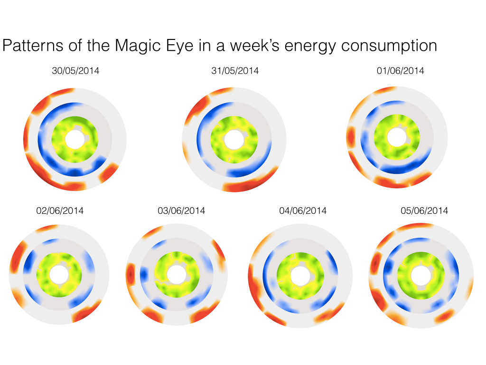

Ambient Visualization of Energy Consumption at a Home
A Project by Vera Fuest
Acknowledgments: I would like to thank Thomáš Gatial for his great support in coding this visualization. He is an extremely skilled programmer.
Idea for the Design
The design is inspired by Fernanda Viegas' and Martin Wattenberg's visualization of One Year in Boston.
The magic eye represents an ambient and casual information visualization that aims to be appealing and enjoyable by hanging on the wall in a home, becoming a natural part of the surroundings. Animations and labels are avoided for the artwork to be in the focus of attention and in order to give freedom of interpretation. Explanations are available on demand but the user might want to make up his mind independently.  The data represented in the magic eye corresponds to 24 hours of energy consumption. It is updated on click with the data of the next seven days displayed in a loop. Therefore, the user can control wether to update the design of the eye or wether to freeze the current artwork.
Visual structures
Electricity is shown in a green to yellow colourscale, cold water in a blue to purple and warm water in an orange to red colourscale. The colours are mapped to the value of the figure that constitutes the number for the energy consumption of this specific hour. The raw data represented a number with around sixteen decimals.Reflections on the Design
I would like to encourage reflective insights and challenge typical perspectives on data by mapping them in an unexpected way. Each figure is cut down into its components instead of looking at the number and its overall value. This alienation effect of the actual values of energy consumption is meant to distract from a feeling of guiltiness and encourage people to change their behaviour because they want to see how it affects the artwork, not because they feel responsible to do so.
Future Work
The data could be transformed in a more strange and unexpected way. An idea could be to map the consumption values to the alphabet and then attach a color to the letter. This will create a data mapping that is more distant from the actual energy consumption and might raise more interest from users to find out what lies behind.
More details about the data mappings and visual structures are illustrated in the visualization pipeline displayed below.